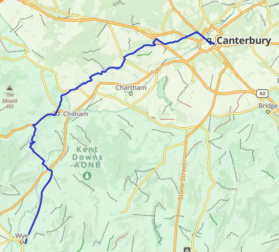
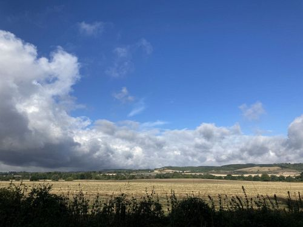
After an initial prediction of more storms, the forecast
cleared up and I decided to go for it. The weather was fine
the rest of the day. |
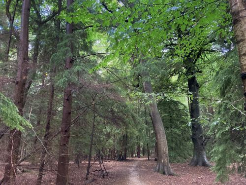
Heading
from Wye to Canterbury, you pass through the Kent Downs AONB
(Area of Natural Beauty), much of which is ancient forest. |
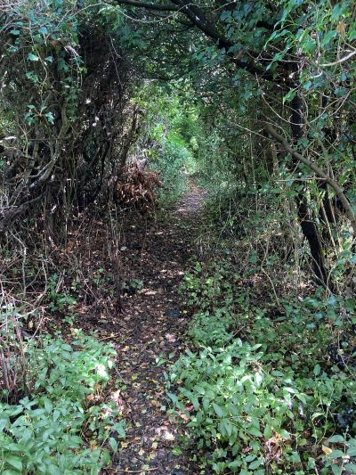
Is
this really the right path?
|
|---|---|---|
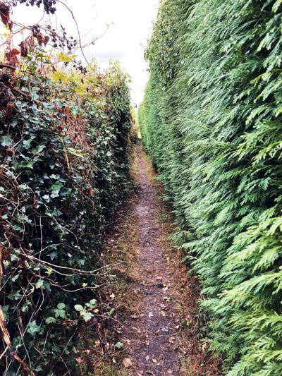 A tight squeeze |
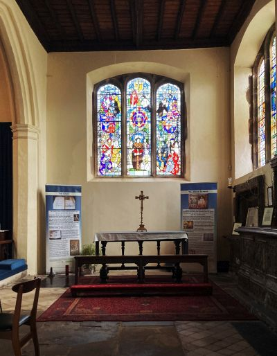
In Canterbury, less than a mile from the Cathedral, I arrive
at St. Dunstan's. This church is where, on July 12, 1174, King
Henry II, having traveled to Canterbury from London in penance
for his role in the murder of St. Thomas, removed his royal
garments and shoes and donned sackcloth. He then went barefoot
to the Cathedral.
It is also the location of the relic of the head of St. Thomas
More. After his execution, St. Thomas's head was displayed on
a pike on London Bridge. His daughter Margaret, having bribed
the guards, took her father's head and brought it to
Canterbury. Her husband, William Roper, lived nearby, and the
family buried the head in a niche under the floor. The floor
memorial is just to the left of the altar in the Roper chapel
above.
|
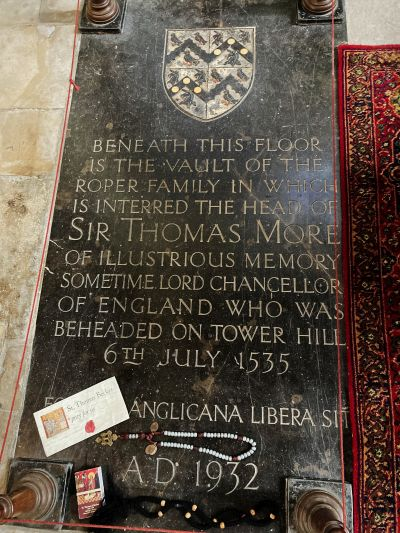
|
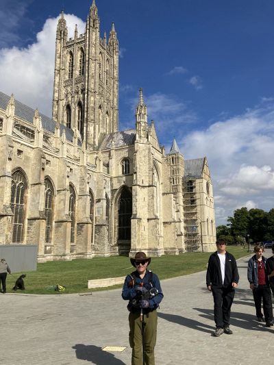
Canterbury
Cathedral
|
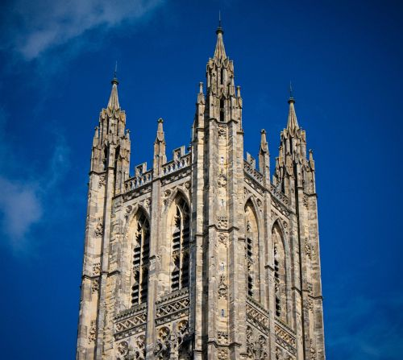
|
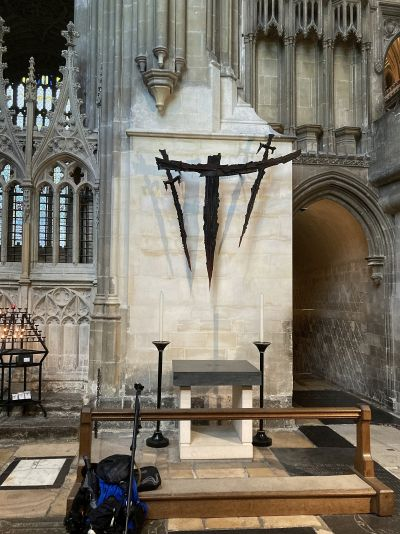 This is the altar that marks the area where St. Thomas Becket was murdered. I decided to leave your intentions at this place. The location of where his shrine used to be (it's in a later picture) is in a larger, restricted area. There were no other prayer intentions or signs of devotional gifts, so I wasn't sure if leaving the intentions and a shell I had carried from Dauphin Island, Alabama would be frowned upon or not. The sculpture on the wall is quite symbolic. The two swords are tipped in red, and their shadows create a total of four swords for the four knights who murdered Becket. The shard between them represents the broken tip of a sword, for one of the knights struck the top of Thomas's head so hard that it broke off the tip of his sword and removed the top of Thomas's skull. Another knight then stood on Thomas's neck, scattered his brains across the floor with his sword, and said, "Let us away.... He will rise no more."
|
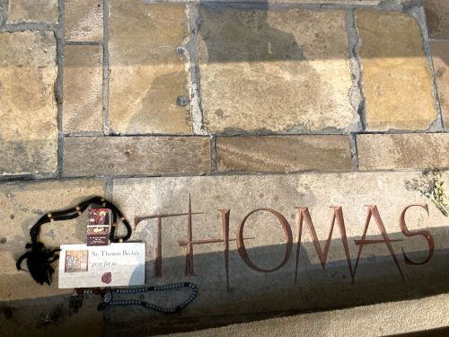
The
floor right in front of the kneeler. Be sure to look at the
last page of photos to find out what happened to the
intentions. |
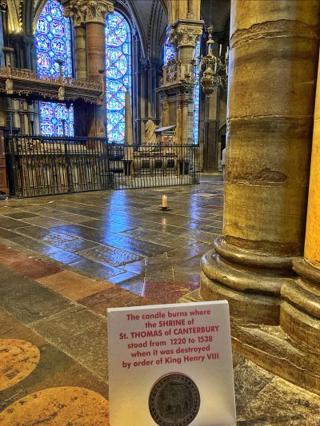
The site of St. Thomas's shrine
|
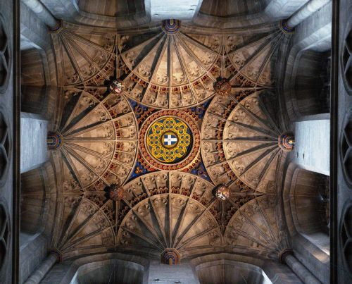
Ceiling
of Canterbury Cathedral |
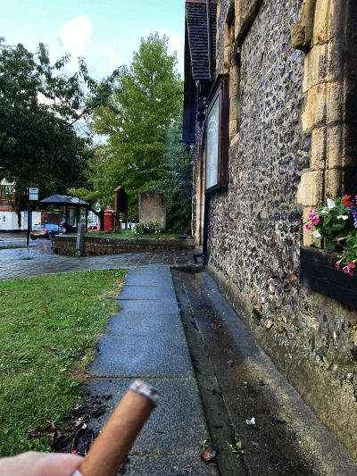
At the end of the day, having completed the pilgrimage, I sat outside St. Dunstan's with the presence of Sir Thomas More nearby and enjoyed the Hoyo de Monterrey Epicure No.2 cigar I initially purchased on the first day.
|
||